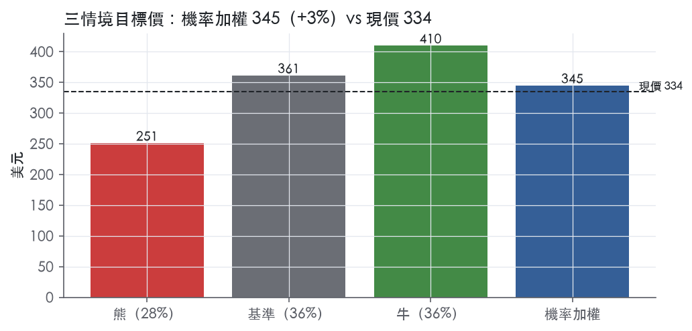
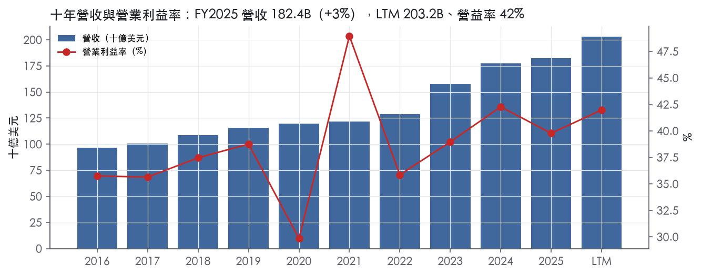
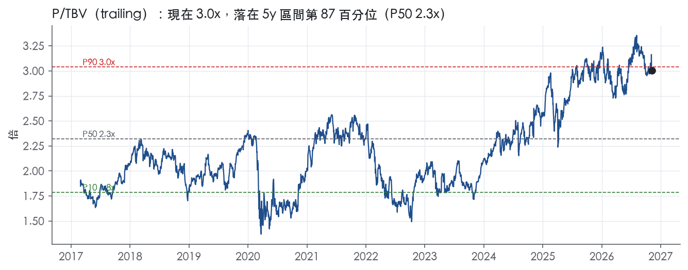
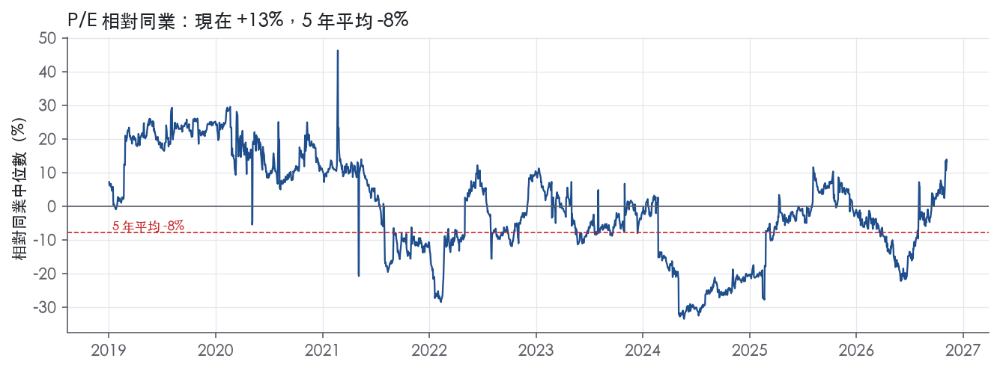
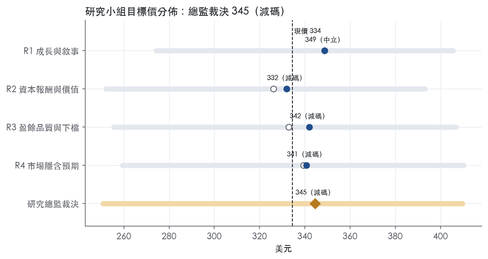
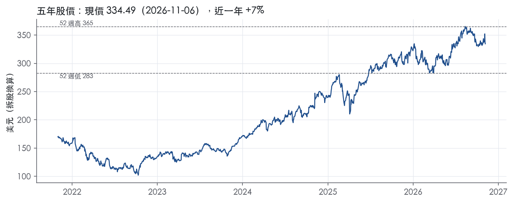

評等總表 › 金融 › JPM
核心複利完好、估值已滿，中性｜評等 減碼｜目標價 345
| 報告日 | 評等 | 目標價 | 當時股價 | 超額報酬 |
|---|---|---|---|---|
| 2026-11-06 | 減碼 | 345 | 334 | -5.0% |
| 2026-10-02 | 中立 | 346 | 332 | -4.5% |
| 快評 | 動作 | 結論 |
|---|---|---|
| 2026-10-13 | 維持 | 3Q26 EPS 低於預測，維持中立 |
| 評等 | 減碼（邊界，鄰近中立） |
| 12 個月目標價 | 345 美元 |
| 現價 | 334.49 美元（2026-11-06） |
| 預期報酬 | 股價 +3.0%＋股息 1.8%＝總報酬 +4.8%；同業籃門檻 9.8%，超額 -5.0% |
| 估值方法 | P/TBV 2.9x，套在一年後的有形淨值 |
| 三情境 | 熊 251／基準 361／牛 410 |
| 研究流程 | 四位研究員兩輪辯論＋研究總監裁決 |
| 資料來源 | SEC EDGAR XBRL、Tiingo、FRED（全免費） |
核心複利完好、估值已滿，中性（研究總監裁決，四位研究員兩輪辯論後）
評等 減碼（邊界，鄰近中立）｜12 個月目標價 345 美元（總監三情境機率加權 348 與研究員中位數 341 各半）｜現價 334.49（2026-11-06）
預期報酬：股價 +3.0%＋股息 1.8%＝總報酬 +4.8%。同業籃門檻 9.8%，超額 -5.0%，離中立的分界不到三個百分點，屬邊界評等（落在其他級距的機率約五成）。
估值方法：P/TBV 2.9x，套在一年後的有形淨值。三情境：熊 251（28%）／基準 361（36%）／牛 410（36%）。
立場中性而評等減碼：評等看的是「預期總報酬 4.8% − 同業籃門檻 9.8%」＝超額 -5.0%，不是絕對漲跌；中性但超額偏離門檻，代表情境機率或股利把報酬推離門檻。
評等說明：研究總監自己的機率加權目標價 348 美元對應「中立」；與研究員第二輪中位數 341 美元各半後為 345 美元，落入「減碼」。兩者只差一級，請把這檔讀成「中立～減碼」，正文裡總監的立場文字以「中立」寫成。
什麼會讓研究總監改變看法：4Q26 財報的 2027 年費用指引成長低於 NII 指引且淨買回回到 4B 以上，倍數上修到 3.0–3.2x 轉偏多；信用成本率連兩季 ≥1.3% 或排除重大項目 ROTCE 連兩季 <19%，倍數降到 2.7x 轉偏空。
| 過去四季（實際，FY2026Q3） | 未來四季 | 第 5–8 季 | 第 9–12 季 | |
|---|---|---|---|---|
| 淨營收（B） | 203.2B | 214.3B | 228.3B | 242.0B |
| 淨營收成長 | 13.2% | 5.5% | 6.5% | 6.0% |
| 稅前利益率 | 42.0% | 40.0% | 40.0% | 40.5% |
| EPS（美元） | 23.89 | 24.81 | 26.96 | 29.52 |
| EPS 成長 | 18.0% | 3.8% | 8.7% | 9.5% |
| 每股股息（美元） | 6.15 | 6.15 | 6.15 | 6.15 |
| ROTCE | 21.7% | 21.6% | 21.2% | 20.7% |
| 每股有形淨值（美元） | 112.45 | 124.51 | 138.74 | 155.60 |
| P/E（現價） | 14.0x | 13.5x | 12.4x | 11.3x |
| P/TBV（現價） | 3.0x | 2.7x | 2.4x | 2.1x |
| 股息殖利率（現價） | 1.8% | 1.8% | 1.8% | 1.8% |
過去四季為申報數字；預測為研究總監的假設、程式計算。倍數與殖利率都用現價計算，用來看現價對應各期獲利的高低。
| 項目 | 上次（2026-10-04） | 這次（2026-11-09） | 變動 |
|---|---|---|---|
| 評等 | 中立 | 減碼 | 變動 |
| 機率加權目標價（美元） | 346 | 345 | -0.3% |
| 超額報酬 | -4.5% | -5.0% | -0.5 pp |
| 目標倍數 | 3.0x | 2.9x | — |
| 未來四季營收成長 | 6.0% | 5.5% | -0.5 pp |
| 未來四季營益率 | 40.5% | 40.0% | -0.5 pp |
| 未來四季 EPS（美元） | 26.09 | 24.81 | -4.9% |
| 熊／基準／牛機率 | 29／39／32 | 28／36／36 | — |
程式計算；「未來四季」各自從當次報告的資料起點算。研究總監逐點說明見第八章「與上次報告比較」。
| 情境 | 機率（歷史） | 故事 | 未來四季營收成長 | 第 5–8 季稅前利益率 | 倍數 | 目標價 | 股價漲跌 |
|---|---|---|---|---|---|---|---|
| 熊 | 28%（28%） | 本行下行路徑（失業率 5.1、利差 2.30、降息至 3.88）下信用成本率升到約 1.5% 並疊加 Markets 年減，稅前利益率回 FY2022 量級，溢價回吐到 10 年 P50——風險表第 2 條（信用成本回升）與第 1 條（Markets／IB 波動）同時發生，第 3 條（降息壓 NII）放大 | -3.0% | 36.0% | 2.1x | 251 | -25.0% |
| 基準 | 36%（37%） | 政策利率 4.38 整年不降撐住 NII，Markets 對高基期走平，Visa 與股權利得退場使報表成長降檔，負剪刀差使稅前利益率守 40%，ROTCE 守兩成，溢價小幅回吐到 10 年 P90 | 5.5% | 40.0% | 2.9x | 361 | 7.9% |
| 牛 | 36%（35%） | 本行上行路徑（利差 1.45、GDP 2.8）下信用成本停在 0.7%、IB 與財管手續費接棒 Markets、費用剪刀差轉正，SCB 固定與 CET1 13.9% 讓買回回到 LTM 步調，倍數到 1 年 P90 | 9.0% | 42.0% | 3.2x | 410 | 22.5% |
目標價由程式依研究總監的驅動與倍數計算；機率由研究總監給定。括號內是歷史頻率：把這檔股票過去十年 12 個月報酬的波動形狀，置中在基準情境，結果落在各情境附近的比例。

四位研究員用不同方法各自估值，回應研究總監的質疑後交出第二輪，最後由總監逐點裁決。各研究員的主張見第七章，裁決理由見第八章，完整論證見《研究底稿》。
| 立場（一輪→二輪） | 加權目標價（一輪→二輪） | 評等（一輪→二輪） | 第二輪倍數 | 熊～牛目標價 | |
|---|---|---|---|---|---|
| R1 成長與敘事 | 中性→中性 | 349→349 | 中立→中立 | 2.9x | 274～405 |
| R2 資本報酬與價值 | 看空→看空 | 326→332 | 減碼→減碼 | 2.8x | 252～393 |
| R3 盈餘品質與下檔 | 中性→中性 | 333→342 | 減碼→減碼 | 2.8x | 256～407 |
| R4 市場隱含預期 | 中性→看空 | 339→341 | 減碼→減碼 | 2.8x | 259～410 |
| 研究總監裁決 | 中性 | 345 | 減碼 | 2.9x | 251～410 |
目標價由程式依各自的驅動與倍數計算；評等＝機率加權總報酬 − 同業籃門檻。
JPMorganChase 是一家以美國為基地、業務遍佈全球的金融控股公司，截至 2025 年 12 月 31 日資產達 4.4T 美元、股東權益 362.4B 美元¹。公司在投資銀行、消費者與小企業金融服務、商業銀行、金融交易處理與資產管理等領域均居領導地位，以 J.P. Morgan 與 Chase 品牌服務數百萬美國為主的客戶，以及全球最重要的企業、機構與政府客戶¹。主要銀行子公司為 JPMorgan Chase Bank, N.A.，在美國 48 州及華盛頓特區設有分行；主要非銀行子公司為美國券商 J.P. Morgan Securities LLC，海外主要營運實體為英國的 J.P. Morgan Securities plc 與德國的 J.P. Morgan SE¹。LTM（至 FY2026Q3）營收 203.15B 美元、GAAP 稀釋 EPS 23.89 美元，市值 888.27B 美元。這是一家規模與業務線都極度分散的全能銀行，監理負擔與資本要求也隨之沉重。
JPMorgan 管理報表下分三大可報告分部——消費者與社區銀行（CCB）、商業與投資銀行（CIB）、資產與財富管理（AWM），其餘活動歸入 Corporate¹。CCB 為消費者業務分部，CIB 與 AWM 為批發業務分部¹。10-K 本身未在 Item 1 揭露各分部的營收佔比與產品細節，相關說明收錄在 MD&A「Business Segment & Corporate Results」章節¹。從員工分佈可看出分部規模感：CCB 144,196 人、CIB 94,563 人、AWM 29,722 人、Corporate 50,031 人，合計全球 318,512 名員工，58% 在美國¹。從 FY2026Q3 季度數字看，CCB 淨營收 21,171M 美元、CIB 淨營收 22,734M 美元、AWM 規模較小但 ROE 最高（45%）²。CIB 下再分 Banking & Payments（3Q26 營收 10,958M 美元）與 Markets & Securities Services（3Q26 營收 11,776M 美元，其中 Markets 10,300M 美元）²；CCB 下再分 Banking & Wealth Management（11,673M 美元）、Home Lending（1,217M 美元）、Card Services & Auto（8,281M 美元）²。AWM 的 AUM 達 5.2T 美元，年增 13%²。整體看，CIB 的市場業務（Markets）波動性最大，是推升近兩季營收與獲利的主力。
公司客戶群橫跨消費者、小企業、企業、機構與政府，通路包括零售分行網絡、數位銀行、投行與機構銷售團隊、財富管理顧問¹。地理上，北美員工 185,208 人、亞太 96,499 人、歐非中東 31,030 人、拉美與加勒比 5,775 人，顯示業務雖以美國為核心，但亞太佈局已具相當規模¹。海外主要以英國（J.P. Morgan Securities plc）與德國（JPMSE）為歐洲樞紐，在 66 個國家營運¹。10-K 未按地區揭露營收佔比，但英國另有零售銀行 J.P. Morgan Europe Limited 及零售投資管理業務 J.P. Morgan Personal Investing Limited，顯示公司正把 Chase 零售模式往海外複製¹。信用卡與簽帳卡銷售量、行動銀行活躍用戶數是 CCB 的核心通路指標，FY2026Q3 簽帳與信用卡銷售量年增 10%、活躍行動銀行用戶年增 7%²。客戶集中度風險分散在批發與零售兩端，批發客戶（CIB、AWM）貢獻波動性更高的手續費與交易收入，零售客戶（CCB）貢獻較穩定的淨利息收入。
FY2025Q4（截至 2025-12-31）營收 45.80B 美元，年增 7.1%，EPS 4.68 美元，效率比 52.4%、ROTCE 17.7%。FY2026Q1 營收 49.84B 美元，年增 10.0%，EPS 5.94 美元，ROTCE 回升至 22.3%。FY2026Q2 營收 57,347M 美元，年增 28%，淨利 21,155M 美元，EPS 7.70 美元，ROE 24%、ROTCE 29%，其中含 Visa 股份淨收益 4,600M 美元與部分股權投資收益 1,000M 美元兩項重大項目，扣除後淨利為 16,900M 美元、EPS 6.14 美元、ROTCE 23%³。CIB 當季 Markets 營收年增 35%、IB 手續費年增 30%；CCB 營收年增 8%；AWM 營收年增 19%，長期 AUM 淨流入 50,000M 美元，AUM 突破 5,000,000M 美元（即 5T 美元）³。FY2026Q3 淨營收（reported）50,172M 美元，年增 8%，季減 13%；淨利 15,305M 美元，年增 6%，EPS 5.57 美元，ROE 17%、ROTCE 20%，當季含 Corporate 部門 658M 美元淨投資證券損失此一重大項目，扣除後淨利 15,800M 美元、EPS 5.75 美元、ROTCE 21%²。CIB 營收 22,734M 美元年增 14%，其中 Equity Markets 營收年增 49%、Fixed Income Markets 營收下滑 4%；CCB 營收 21,171M 美元年增 9%，淨新增支票帳戶逾 650,000 戶；AWM 營收年增 14%，客戶資產淨流入 263,000M 美元（即 263B 美元）²。公司在 3Q26 法說稿中表示，CIB 客戶活動在本季稍有降溫，並因資本配置優先順序將回購規模縮減²。綜觀四季，獲利波動主要來自 Markets 業務與 Corporate 一次性投資損益，核心的淨利息收入與手續費收入則穩定成長。
公司表示其長期成長與成功取決於能否吸引、培育、留任優秀人才並營造包容的工作環境¹。管理層在法說稿中強調「資本配置順序」：優先投資特許經營權與支持客戶，其次才是股東回饋，因此本季（3Q26）主動縮減股票回購規模²。CEO Dimon 指出，CIB 的 Markets 與 IB 業務受惠於高水位客戶活動與多年持續投資，Payments 與 Securities Services 則靠存款與手續費成長推動雙位數營收增長³。在 CCB，公司強調連續第六年美國零售存款市佔第一，並持續以淨新增支票帳戶數與財富管理首次投資人數衡量客戶擴張動能²。在 AWM，公司以 AUM 規模與淨流入金額作為成長引擎的量化指標，2Q26 法說稿提到 AUM 突破 5T 美元、長期淨流入 50,000M 美元³。公司也多次提及總體環境雙面性：美國經濟受 AI 驅動資本支出、財政刺激等利多支撐，但大額財政赤字、頑固通膨、資產價格偏高與地緣政治風險「如板塊般在表面下位移」，管理層表示會為各種情境預做準備³。整體而言，JPMorgan 的成長敘事是「三引擎＋資本紀律」：CIB 靠市場波動與資本市場活動放大業績彈性，CCB 靠規模化零售通路與信用卡滲透穩定擴張，AWM 靠 AUM 複利吃資產管理費。公司刻意在財報稿中反覆揭露 ROTCE、效率比與資本比率，顯示其對外溝通核心仍是「報酬率紀律優於單純規模擴張」。但 Markets 業務佔比提升也意味獲利對交易環境的敏感度上升，一旦客戶活動降溫（如 3Q26 IB 費用季減 8%），單季獲利波動可能放大。

JPMorgan 具備寬護城河，判斷基礎是三件事：品牌與監理執照構成的無形資產、存款與支付關係帶來的轉換成本、以及規模帶來的資金與營運成本優勢。我們有把握其 ROE 在未來 10 年以上維持高於資本成本，但超額報酬的幅度不寬，趨勢判為穩定而非變寬。開放銀行規則與資本規則改革是兩個可能讓趨勢轉為變窄的變數，估值研究員應持續追蹤。
無形資產（品牌、執照）是最紮實的一項來源。
轉換成本來自存款、支付與交易處理關係。
成本優勢體現在資金成本與營運效率。
數字支持「ROE 長期高於資本成本」這個主張，但超額幅度只算中等，不屬於壓倒性優勢。
數字與主張有兩處衝突。
最大威脅是轉換成本被法規與科技公司削弱，其次是資本規則壓低 ROE。
目標倍數應高於同業，因為這是少數 ROE 長期穩定高於資本成本、且具備多重優勢來源的美國大型銀行。不過現價的 P/TBV 已達 3.0x，位於 5 年分位 86.8%，等於 5 年 P90；P/E 14.0x 也處於 5 年分位 71.0%，溢價大致已反映在股價上。建議估值研究員維持溢價，但不再擴大到 5 年區間上緣之外；若開放銀行規則或資本規則朝不利方向定案，溢價應下修。
| 指標 | 最新 | 十年平均 | 標準差 | 最低 | 最高 |
|---|---|---|---|---|---|
| ROE | 16.1% | 14.0% | 2.6% | 9.6% | 17.4% |
| 稅前利益率 | 39.8% | 38.3% | 4.7% | 29.9% | 49.0% |
| 淨營收成長 | 2.8% | 7.5% | 6.2% | 1.4% | 22.9% |
程式計算。資本成本代理值（10 年債＋5%）：9.8%；ROE 十年平均減資本成本：4.2%；ROE 有資料的 9 年中，高於資本成本 8 年。
JPMorgan 是銀行控股公司，SBC／營收（LTM 2.0%）、稀釋股數年變動（LTM -0.4%）、（股利＋回購）／淨利（LTM 63.6%）三項指標皆落在綠燈區。但程式標出 FY2020→FY2021、FY2021→FY2022 兩段淨利率大幅跳動，資料包提供的 10-K Item 7 節錄未涵蓋具體財務結果段落，無法用原文證實此為信用成本週期性波動或一次性項目，故評級保留在「中」而非「高」。
銀行的 CFO、FCF、EBITDA、淨負債在資料包定義下沒有意義，不應引用來判斷現金轉換。改用銀行專屬指標：FY2026Q1-Q3 信用成本率為 0.7%、0.7%、0.7%，低於 FY2025Q4 的 1.3%；淨沖銷率穩定在 0.6%-0.7%；備抵／放款比維持 1.8%。這組數字代表資產品質沒有惡化、提列沒有被人為壓低。更關鍵的現金對應指標是每股有形淨值（tbv_ps），由 FY2024Q4 的 96.67 持續爬升到 FY2026Q3 的 112.45，這代表留存盈餘確實轉化為資本累積，而非紙上利潤。ROTCE 本季 20%，波動區間在 17.7%~27.7%，波動主要來自分母（有形權益）與分子（含一次性項目的淨利）雙重變動，不是現金流跟不上盈餘的訊號。
本季新聞稿明確標示「Significant Item」為 Corporate 部門 $658 million 的淨投資證券損失，拖累每股盈餘 $0.18²。GAAP 淨利 $15.3 billion（每股 $5.57），排除此項後為 $15.8 billion（每股 $5.75）²。這筆損失是已實現的證券減損，不是攤銷或重組等會計估計項目，本分析師認為應計入真實經濟成本，不應加回。換算下來公司給的非 GAAP 數字比 GAAP 高出約 3%，方向是「調高」而非典型的「調低費用美化」，顯示管理層傾向把波動較大的證券投資損益單獨剔除以呈現核心業務盈利能力，但這類損失未來仍可能重複發生。此外公司區分「reported」與「managed」營收口徑（managed $50.9B vs. reported $50.2B）²，差異主要來自信用卡業務的免稅等值調整，屬於銀行業常規口徑調整，非盈餘操弄。
資本充足度無虞：CET1 標準法比率 13.9%、進階法 14.1%，總損失吸收能力 (TLAC) $599 billion，補充槓桿比率 5.5%²。股東回饋方面，本季普通股股息 $4.4 billion（每股 $1.65），淨回購僅 $664 million，LTM 淨支付率 61%²，CEO 明確表示本季「reduced share repurchases」²，顯示管理層把資本配置優先放在支持特許經營與客戶業務，回購是調節閥而非剛性承諾。十年期稀釋股數從 FY2016 的 3.69B 降到 FY2025 的 2.78B（資料包摘要），長期回購確實減少股數，支撐每股指標，與計分卡稀釋股數綠燈一致。帳面淨值每股 $132.30、有形淨值每股 $112.64，各年增 6%、7%²。銀行無傳統「淨負債/EBITDA」槓桿概念，應以 CET1、SLR、TLAC 取代，三者皆明顯優於監管底線，不構成對估值倍數的限制。
估值應以 GAAP 淨利（本季 $15.3 billion、EPS $5.57）為主基準，非 GAAP 排除項（$658 million 證券損失）屬真實已實現損失，不應全額加回去估長期盈餘能力。銀行估值應優先用 P/TBV 與 ROTCE 而非 P/E 或現金流殖利率，目前 P/TBV 3.0x 處於五年 86.8% 分位（資料包摘要），已反映市場對資本回報能力的樂觀定價，兩段歷史淨利率跳動雖可能是信用週期正常現象，但缺乏原文佐證，建議在估值模型中對 2021-2022 區間盈餘基期打折，不要直接外推作永續成長起點。CET1、SLR 等資本比率充足，不構成對估值倍數的下行限制。
| 項目 | LTM | 近三年 | 十年 | 燈號 | 規則 |
|---|---|---|---|---|---|
| SBC／營收 | 2.0% | 2.0% | 2.1% | 綠 | ≤3.0% 綠、>8.0% 紅 |
| 稀釋股數年變動 | -0.4% | -2.2% | -3.1% | 綠 | ≤0.0% 綠、>3.0% 紅 |
| （股利＋回購）／淨利 | 63.6% | 63.0% | 72.7% | 綠 | ≥50.0% 綠、<0.0% 紅 |
程式計算；燈號以 LTM（無則近三年平均）判定。銀行的現金流、淨負債、利息保障是本業，不列入。
| 指標 | FY2025Q2 | FY2025Q3 | FY2025Q4 | FY2026Q1 | FY2026Q2 | FY2026Q3 |
|---|---|---|---|---|---|---|
| 淨利息收入（B） | 23.2B | 24.0B | 25.0B | 25.4B | 25.5B | 27.0B |
| 淨利息收入／平均總資產 | 2.1% | 2.1% | 2.2% | 2.2% | 2.1% | 2.1% |
| 效率比 | 52.9% | 52.3% | 52.4% | 53.9% | 47.6% | 54.4% |
| 信用成本率 | 0.8% | 1.0% | 1.3% | 0.7% | 0.7% | 0.7% |
| 淨沖銷率 | 0.7% | 0.8% | 0.7% | 0.6% | 0.6% | 0.6% |
| 備抵／放款 | 1.9% | 1.9% | 1.8% | 1.8% | 1.8% | 1.8% |
| 放款／存款 | 52.5% | 53.7% | 55.0% | 53.3% | 53.9% | 53.8% |
| ROTCE | 20.8% | 19.7% | 17.7% | 22.3% | 27.7% | 20.1% |
| 每股有形淨值（美元） | 102.78 | 105.08 | 106.95 | 108.71 | 113.18 | 112.45 |
程式依 SEC XBRL 計算；季度流量年化。效率比＝非利息費用÷淨營收（越低越好）；信用成本率＝提列÷放款；淨沖銷率＝淨沖銷÷放款；淨利息收入÷平均總資產不是淨利差（NIM 的分母是生息資產，XBRL 沒有）。CET1 等監理資本比率不在 XBRL，見財報新聞稿。
| 風險 | 觸發指標（看什麼數字、在哪裡看） | 對 EPS 的影響方向與粗略幅度 | 未來 12 個月發生機率（高／中／低） | 出處 |
|---|---|---|---|---|
| Markets／IB 手續費波動放大獲利震盪 | CIB 季度 Markets 營收年增率、IB 費用季增率（財報 CIB 段落） | 負向，中～大；3Q26 IB 費用已季減 8%，Fixed Income Markets 年減 4%² | 中 | 8-K 財報新聞稿（2026-10-13） |
| 信用成本率／準備金回升侵蝕淨利 | 信用成本率（dv.credit_cost）、淨沖銷率（dv.nco_rate）、每季 Provision for credit losses 金額 | 負向，中；3Q26 信用成本率回升至 0.7%、provision 2,743M 美元含 539M 美元淨準備金增提（²） | 中 | ²+量化底稿 |
| 利率環境逆轉壓縮淨利息收入與 AFS 評價 | 淨利息收入／平均總資產（dv.nii_to_assets）逐季變化、ust10y／fed_funds（FRED） | 負向，中；公司明言降息或低利環境會壓縮淨利差並減損 MSR 價值⁴ | 中 | 10-K 年報 FY2025 Item 1A（風險因素） |
| 監理資本要求變動（SCB、Basel III 終版規則）限制資本回饋 | Fed 於 2026 年公布的最終 SCB（10/1/2026 生效）、巴塞爾III新提案時程 | 負向，中；若 SCB 上調，回購空間縮小，EPS 無直接衝擊但限制每股盈餘成長槓桿⁴ | 中 | 10-K 年報 FY2025 Item 1A（風險因素） |
| 訴訟／監理調查與解決金額（Legal and Regulatory） | 新增重大訴訟揭露、FDIC／OCC／Fed 執法行動公告、10-K Legal Proceedings 章節更新 | 負向，方向明確但幅度不可預估（原文未給數字）⁴ | 低 | 10-K 年報 FY2025 Item 1A（風險因素） |
第一、Markets／IB 波動放大獲利彈性是目前最該盯的風險。CIB 的 Markets 與 IB 業務在 FY2026Q2、Q3 連續貢獻大幅營收成長（2Q26 Markets/IB 各增約雙位數至十幾個百分點、3Q26 Equity Markets 年增 49%），但 3Q26 財報已出現反轉訊號：IB 費用季減 8%、Fixed Income Markets 年減 4%，Dimon 本人也說「活動在本季稍有降溫」²。公司業務概況也指出 Corporate 一次性投資損益（3Q26 淨損 658M 美元、EPS 衝擊 -0.18）進一步放大單季波動²。這條風險是可監測的：每季 CIB Markets 營收年增率、IB 費用季變動，是財報必揭露數字。
第二、信用成本率回升排第二，因為放款規模持續擴張（平均放款年增 10%）但信用成本率已從 FY2026Q1 的 0.7% 回升、FY2025Q4 一度到 1.3%（dv.credit_cost 系列），3Q26 淨準備金增提 539M 美元主要來自 Wholesale²。10-K 本身也警告，經濟下行會導致拖欠率上升、信用損失提列增加、淨沖銷上升，直接吃掉盈餘⁴。這條指標在每季財報的 Provision for credit losses 與 Card Services net charge-off rate（3Q26 為 2.91%）都能直接觀測²。
第三、利率環境逆轉是傳統銀行股的核心敏感因子。10-K 明確寫出：低或負利率環境會壓縮淨利差、降低投資證券組合收益，並減損抵押貸款服務權（MSR）資產價值進而減少營收⁴；反之高利率持續過久也會造成 AFS 證券虧損與融資成本上升、存款流失⁴。目前 ust10y 4.84%、fed_funds 3.88%（FRED，2026-11）處於相對高位，若 Fed 轉向快速降息或曲線倒掛惡化，淨利息收入／平均總資產（目前穩定在 2.1-2.2%）可能下滑，這是每季可直接比對的指標。
第四、監理資本要求變動影響的不是當期 EPS，而是資本回饋空間與估值倍數。10-K 揭露 Fed 將於 2026 年 8/31 公布最終 SCB、10/1/2026 生效，且 Basel III 修正提案時程仍不確定（原文：Fed 已宣布 SCB 要求維持現狀至 2027/9/30）⁴。3Q26 已可觀察到公司主動縮減回購（664M 美元淨回購，遠低於過去水準）呼應資本配置優先順序轉向²，這本身就是監理壓力的訊號，股價倍數（目前 P/E 14.0x，處於 5 年 71% 分位）對資本回饋節奏敏感。
第五、訴訟與監理執法是 10-K 篇幅最大的一類風險，但公司明確說「無法預測」具體金額，且歷史上已多次發生（consent order 與 OCC 於 2024 年 3 月生效，仍在執行中）⁴。這條排最後，因為機率雖不低但單次事件對 EPS 的影響歷史上多為可吸收範圍，且原文未提供具體準備金數字可引用。
現價 334.49 對應 trailing（過去四季）P/E 14.0x、P/TBV 3.0x（ROTCE 21.7%）、股息殖利率 1.8%。主要估值倍數 P/TBV 現在 3.0x，落在5 年區間第 87 百分位（P10／P50／P90 = 1.8x／2.3x／3.0x）。

把程式的機械基準預測放到現價下，市場付的前瞻倍數是：P/TBV（未來四季） 2.6x、P/E（未來四季） 12.2x、P/TBV（第 5–8 季） 2.3x、P/E（第 5–8 季） 10.9x。
| 倍數 | 現在 | 5 年 P10 | 5 年 P50 | 5 年 P90 | 現在分位 | 全期 P50 |
|---|---|---|---|---|---|---|
| P/E | 14.0x | 9.1x | 11.7x | 15.4x | 71.0% | 12.6x |
| P/TBV | 3.0x | 1.8x | 2.3x | 3.0x | 86.8% | 2.1x |
trailing 倍數（股價 ÷ 過去四季）；分位以每個交易日計算。
同業籃：BAC, C, WFC, GS, MS（手動名單（playbooks/peers.yaml））。評等門檻 9.8%：同業「倍數不變下持有一年」的隱含報酬中位數（＝ 盈餘殖利率 ×(1＋g)＋g，g 為 5 年營收年複合成長並夾在 −2%～8%），每家夾在 0～15%、P/E 低於 5 倍視為資料可疑而排除，中位數再限制在 10 年債到 10 年債＋5% 之間（同業原始中位數 14.1%）。
| 代號 | 市值 | 5 年營收 CAGR | ROTCE | P/E | 5 年 P/E 中位數 | P/TBV | 隱含報酬 |
|---|---|---|---|---|---|---|---|
| JPM | 888.3B | 8.7% | 21.7% | 14.0x | 11.7x | 3.0x | 15.7% |
| BAC | 342.1B | 5.7% | 14.3% | 11.7x | 12.6x | 1.5x | 14.8% |
| C | 223.0B | 2.5% | 7.8% | 16.8x | 11.8x | 1.3x | 8.6% |
| WFC | 252.0B | 2.4% | 17.2% | 11.8x | 11.9x | 1.9x | 11.1% |
| GS | 249.9B | 5.5% | 21.1% | 12.4x | 15.1x | 2.5x | 14.1% |
| MS | 284.0B | 7.7% | 21.1% | 14.3x | 15.4x | 3.0x | 15.2% |
| 同業中位數 | 5.5% | 17.2% | 12.4x | 12.6x | 1.9x | 9.8% |
全部 trailing，程式以各公司 SEC XBRL 與 Tiingo 行情計算；第一列為本檔。
P/E 相對同業中位數：現在 13.3%，過去 1 年平均 -5.2%、3 年 -9.9%、5 年 -7.9%。

程式的機械基準（成長率從過去四季年增率三年收斂到 6%、利潤率持平）用 P/TBV 5 年 P50（trailing） 估值得到 299（-10.7%），用現行倍數得到 386。這兩個數字只是參考點，不是本報告的目標價；研究員對這個定價的回應在第七章。
下表是每位研究員第一輪（各自獨立）與第二輪（回應研究總監的質疑後）的結果。目標價全由程式依各自的假設計算。
| 立場（一輪→二輪） | 加權目標價（一輪→二輪） | 評等（一輪→二輪） | 第二輪倍數 | 熊～牛目標價 | |
|---|---|---|---|---|---|
| R1 成長與敘事 | 中性→中性 | 349→349 | 中立→中立 | 2.9x | 274～405 |
| R2 資本報酬與價值 | 看空→看空 | 326→332 | 減碼→減碼 | 2.8x | 252～393 |
| R3 盈餘品質與下檔 | 中性→中性 | 333→342 | 減碼→減碼 | 2.8x | 256～407 |
| R4 市場隱含預期 | 中性→看空 | 339→341 | 減碼→減碼 | 2.8x | 259～410 |
| 研究總監裁決 | 中性 | 345 | 減碼 | 2.9x | 251～410 |
目標價由程式依各自的驅動與倍數計算；評等＝機率加權總報酬 − 同業籃門檻。
分歧度：第一輪 加權目標價 326～349（區間＝現價的 7%）· 倍數 2.7～2.9x · 立場 中性×3、看空×1；第二輪 加權目標價 332～349（區間＝現價的 5%）· 倍數 2.8～2.9x · 立場 中性×2、看空×2。

| 研究員 | 第二輪主張 | 堅持的理由 |
|---|---|---|
| R1 成長與敘事 | 中性，目標2.9倍P/TBV，等於市場十年內付過的上限。 | 第一年營收只長5%，2Q26的Visa與股權利得不會重演。 |
| R2 資本報酬與價值 | 偏空，目標2.8倍P/TBV，取過去一年市場付的下緣。 | 合理值3.9倍靠6%永續成長撐起，他不採用。 |
| R3 盈餘品質與下檔 | 中性，目標2.8倍P/TBV，接受相對同業的減碼評等。 | 熊情境只給25%，壓力資本緩衝鎖到2027-09-30，信用尚未轉差。 |
| R4 市場隱含預期 | 偏空，目標2.8倍P/TBV，市場只付跨循環的ROTCE。 | 2Q26利得在2027年7月滾出，過去一年的ROTCE會下台階。 |
每位研究員的逐條回應與完整論證見《研究底稿》（JPM_研究底稿_2026-11-09.docx）。
| 分歧點 | R1 | R2 | R3 | R4 | 什麼資料會分出勝負 |
|---|---|---|---|---|---|
| ① NTM 營收成長 | 5.0% | 4.0%（再押 Markets 年減） | 5.5% | 5.5%（NII ex-Markets +6%） | 4Q26 NII 是否守 27.0B、2027 年 NII 指引（2027-01-20） |
| ② 稅前利益率 | 39.5／40／40.5% | 40／39.5／39.5% | 39.5／40／40% | 40.5／40.5／41% | 4Q26 稅前利益率對 FY2024Q4 的 40.6%；2027 年費用指引對 NII 指引 |
| ③ 目標 P/TBV | 2.9x（10 年 P90） | 2.8x（1 年 P10） | 2.8x | 2.8x | 4Q26、1Q27 排除重大項目 ROTCE 連兩季 ≥22% 或 <19% |
| ④ 股數變動 | −2.0% | −2.5% | −1.5% | −2.0% | 4Q26 淨買回金額對 3Q26 的 664M |
| ⑤ 熊情境深度與機率 | 34／35／38%、2.3x、30% | 35／36／37%、2.1x、31% | 33／35／37%、2.2x、25% | 34／36／38%、2.2x、30% | 信用成本率連兩季 ≥1.3%、備抵率 ≥1.9%、批發淨增提 >539M |
① 裁 R3／R4 的 5.5%。 四人同意 LTM 營收 203.15B含 2Q26 Visa 淨利得 4.6B 與股權投資利得 1.0B³，爭點是核心引擎有多強。3Q26 證據偏向 5.5%：NII 年增 13%、NII ex-Markets 年增 6%、平均放款年增 10%、存款年增 8%、CCB 營收年增 9%、AWM 年增 14%²，且本行前提政策利率 4.38 整年不降，資產敏感的 NII 有撐。R2 的 4.0% 等於在基期效應外再押 Markets 轉年減，但 3Q26 Markets 仍年增 15%；他營收預測勝過機械基準僅 52%、營業利益誤差中位數 −4.3% 系統性偏低，偏離基準需要更強證據而沒有。
② own：40.0／40.0／40.5%。 3Q26 稅前利益率 40.1%含 658M 證券損失；FY2025 全年 39.8%已含信用成本率 1.3% 的 4Q25。R1／R3 的 39.5% 低於 FY2025，要信用成本回到 4Q25 水準再加負剪刀差同時發生，而信用成本率 0.7%、淨沖銷率 0.6% 是八季最低。R4 的 40.5% 則忽略本行利差 1.49→1.75、成長 1.8 下撥備自低點正常化，以及費用年增 12% 快於營收 8%²。本研究部營業利益誤差 −1.7%、R1／R3 −2.3%／−2.9% 皆偏低，依紀錄取 40.0%；y3 回 40.5% 對應投資期後剪刀差轉正（2Q26 效率比曾達 47.6%，規模槓桿存在）。R2 的遞減路徑沒有資料支持費用連續三年吃掉成長。
③ 裁 R1 的 2.9x。 1 年 P10 2.8x是過去一年 ROTCE 印出 17.7%時市場付的下緣；但四人的基準驅動沒有一位把 ROTCE 推到 R2 自定的可持續區間 19–21% 之下（判斷：基準模型 NTM ROTCE 23.6%，各人下修利潤率不過兩個百分點），3Q26 排除重大項目的 ROTCE 也是 21%²。給 P10 倍數配兩成 ROTCE，正是我第一輪對 R3 熊倍數指出的不一致。2.9x＝10 年 P90，是市場十年內付過的上限，站上 3 年 P50 2.7x 的個股理由是 2023 年後 ROTCE 體制上移（12 季平均 20.9%）。不給 1 年 P50 3.0x 的理由全是公司因素：費用對營收的負剪刀差；淨買回縮到 664M 使 LTM 淨派發率由 73% 降到 61%²,³；2Q26 利得於 2027 年 7 月滾出 LTM 使 trailing ROTCE 下台階（R4 機制，日期明確）；P/E 相對同業溢價 13.3% 對 5 年平均 −7.9%（同業比較表）已到極端。不追合理值 3.9x：R2 說得對，它由 g 夾在 6% 上限主導，且 12 季平均含 2Q26 的 27.7%。
④ 裁 R4（R1 相同）的 −2.0%。 R2 的 −2.5% 假設買回回到 LTM 步調，與 Dimon「本季縮減買回、資本隨時間部署於業務」相悖²；R3 的 −1.5% 如 R2 所指，在模型買回金額按 LTM 持平下會重複壓低每股 TBV。SCB 維持現狀至 2027-09-30⁴、CET1 13.9%²說明縮減是選擇，664M 不是常態；−2.0% 與十年股數 3.69B→2.78B（年度表）的長期步調相符。
⑤ 裁 R2 的機制與深度，不採他的機率。 35% 對應 FY2022 的 35.9%量級，配本行下行路徑（失業率 5.1、利差 2.30）下信用成本約 1.5%（R2 假設，高於八季高點 1.3%）疊加 Markets 年減；R3 的 33% 隱含接近 FY2020（29.9%）的信用成本，比本行下行路徑更深。倍數 2.1x＝10 年 P50，對應 P/TBV 處於 10 年帶 93.2% 分位的溢價回吐，R1 的 2.3x 對此估得太輕。但 R2 熊 31%＞牛 29% 與程式對照（牛 36%／熊 29%）相反，他自己承認信用指標在八季低點是反證，這正是本研究部 22 份報告全部熊高於牛的偏誤，不接受。
漂移與總經偏離。 四人第二輪修正全部對應我第一輪意見且附證據；R3 向中位數靠攏 62%，但四項修正（熊倍數對齊 ROTCE、刪 AOCI、牛機率回歷史、稅率縮幅）都是我要求的，drift_rejections 為空。R3 稅率 22% 他自承無法證明三年中位數落在含 774M 稅務利益的 FY2025，退回基準 21.4%。第二輪沒有人再用利率壓倍數。四人均未提 macro_deviations，全採本行前提；R2 不接受公式 g＝6% 是估值方法批評，非總經偏離。利差敏感度（每 1pp −5.4%，t −2.0；前提隱含 −1.4%）與基準情境方向一致。
目標倍數 2.9x P/TBV，套在 NTM 期末每股有形淨值（metric tbv、horizon ntm；錨取自 trailing 帶，配 ntm 口徑）。錨：10 年 P90 2.9x，介於 1 年 P10 2.8x 與 P50 3.0x 之間。相對同業維持溢價不擴大：JPM 稅前利益率 42.0% 對同業中位數 33.2%、5 年營收 CAGR 8.7% 對 5.5%（同業比較表）支撐溢價；護城河章明言溢價不應擴到 5 年上緣之外，現價 3.0x 已等於 5 年 P90。
機率從歷史出發：R1、R2 相近距離的程式對照為牛 36%、熊 29–32%，牛多於熊。牛取 36%——我第一輪退回研究員用「高基期」壓牛機率，因它已在驅動裡，自己不能再犯。熊 28% 低於歷史 1–4 個百分點，證據帶日期：SCB 維持至 2027-09-30⁴排除年內監理強迫縮減配發；信用成本率 0.7%、淨沖銷率 0.6%、備抵率 1.8%在八季低點，惡化尚未開始；本行一年衰退機率 25% 低於基準率 31%。
市場對基準預測付 NTM P/TBV 2.6x、NTM P/E 12.2x，對 LTM 付 3.0x、14.0x：市場已在為利得滾出與 Markets 正常化打折，差距不在盈餘（我們 5.5% 的成長與 R4 拆出的市場預期相近）而在倍數——兩成 ROTCE 配 Fed 整年不降，值 2.9x 而非 1 年 P10。但參照 R1（2.9x）與 R2（熊端）的程式結果，機率加權含息報酬落在中個位數（判斷），低於同業籃 9.8% 門檻。立場中性；若評等落在減碼，差距來自門檻與情境不對稱（R2 對照：牛 +13%、熊 −28%，是 P/TBV 處於 10 年 93.2% 分位的代價），不是看空基本面。
現價 334.49 → 點估目標價 361 → 機率加權目標價 348 → 目標價 345，差距拆成五段：成長順延 +52 美元（市場現行倍數 3.0x 一年後持平、獲利照機械基準）；倍數差 -14 美元（總監倍數 2.9x vs 市場持平倍數 3.0x，同一機械基準預測）；盈餘差 -12 美元（總監預測的未來四季有形淨值 324.0B vs 機械基準 330.9B，同一倍數）；情境不對稱 -13 美元（機率加權減點估）；研究小組平均 -3 美元（總監機率加權 348 與研究員第二輪中位數 341 各半）。各段相加等於目標價減現價。本階段未接賣方共識，差距以市場隱含預期為對照。
| 驅動 | 機械基準 | 研究總監 | 差異 |
|---|---|---|---|
| 未來四季營收成長 | 10.8% | 5.5% | -5.3 pp |
| 第 5–8 季營收成長 | 8.4% | 6.5% | -1.9 pp |
| 第 9–12 季營收成長 | 6.0% | 6.0% | ＝ |
| 未來四季稅前利益率 | 42.0% | 40.0% | -2.0 pp |
| 第 5–8 季稅前利益率 | 42.0% | 40.0% | -2.0 pp |
| 第 9–12 季稅前利益率 | 42.0% | 40.5% | -1.5 pp |
| 稅率 | 21.4% | 21.4% | ＝ |
| 股數年變動 | -3.1% | -2.0% | +1.1 pp |
研究總監只寫偏移，未寫的沿用基準。銀行的 D&A、資本支出、SBC 不影響估值，不列。
| 期 | 淨營收 | 成長 | 稅前利益率 | 稅前利益 | 淨利 | EPS | 每股股息 | 期末有形淨值 | 每股有形淨值 |
|---|---|---|---|---|---|---|---|---|---|
| 未來四季 | 214.3B | 5.5% | 40.0% | 85.7B | 67.4B | 24.81 | 6.15 | 324.0B | 124.51 |
| 第 5–8 季 | 228.3B | 6.5% | 40.0% | 91.3B | 71.7B | 26.96 | 6.15 | 353.8B | 138.74 |
| 第 9–12 季 | 242.0B | 6.0% | 40.5% | 98.0B | 77.0B | 29.52 | 6.15 | 388.9B | 155.60 |
程式依上表的驅動計算；季度用最近四季季節性分攤；不含營運資金變動。
估值方法：P/TBV 2.9x，套在一年後的有形淨值。研究總監目標倍數的錨：自家 trailing P/TBV 10 年 P90 2.9x，介於 1 年 P10 2.8x 與 P50 3.0x 之間；高於 3 年 P50 2.7x 因 2023 年後 ROTCE 體制兩成（12 季平均 20.9%）；低於 3.0x 因負剪刀差、買回縮減、2Q26 利得於 2027 年 7 月滾出 LTM、P/E 相對同業溢價 13.3% 對 5 年均 −7.9%；不取合理值 3.9x（g 夾 6% 上限、含 27.7% 利得季）。
計算：有形淨值（未來四季期末） 324.0B × 2.9x＝權益價值 939.7B，除以未來四季的股數 → 點估目標價 361（7.9%）；隱含 P/E（未來四季）14.6x、P/E（第 5–8 季）13.4x。
總監三情境機率加權目標價 348，研究員第二輪中位數 341，兩者各半＝目標價 345；預期報酬 股價 +3.0%＋股息 1.8%＝總報酬 +4.8%；減評等門檻 9.8%（同業籃隱含報酬中位數（BAC, C, WFC, GS, MS））＝超額報酬 -5.0% → 評等 減碼（超額 >+15% 買進、+5～+15% 加碼、±5% 中立、−5～−15% 減碼、<−15% 賣出）。同一份資料重開研究小組，超額約有正負四個百分點的雜訊（一個標準差，二十檔實測）；以此估計，評等落在其他級距的機率約五成。超額離中立的分界不到三個百分點，應視為邊界評等。
| 情境 | 機率 | 未來四季成長 | 第 5–8 季成長 | 第 5–8 季稅前利益率 | 有形淨值（未來四季期末） | 倍數 | 目標價 |
|---|---|---|---|---|---|---|---|
| 熊 | 28% | -3.0% | 2.0% | 36.0% | 310.9B | 2.1x | 251 |
| 基準 | 36% | 5.5% | 6.5% | 40.0% | 324.0B | 2.9x | 361 |
| 牛 | 36% | 9.0% | 8.0% | 42.0% | 329.8B | 3.2x | 410 |
| 主張 | 驗證日 | 看哪個數字 | 門檻 |
|---|---|---|---|
| 4Q26 淨利息收入守住 3Q26 水準 | 2027-01-20 | >= 27.0B | |
| 4Q26 Markets 營收對高基期走平 | 2027-01-20 | 8-K 4Q26 CIB Markets revenue YoY | < 10% |
| 4Q26 稅前利益率低於基準 42% 年度對應的季節性水準 | 2027-01-20 | < 40.6% | |
| 3Q26 的 664M 淨買回不是新常態 | 2027-01-20 | 8-K 4Q26 Capital Distributions common stock net repurchases | >= 2.0B |
| 1Q27 撥備溫和正常化而非熊情境路徑 | 2027-04-20 | <= 1.0% |
到期由程式結算（第 5 階段帳本）。
內文上標數字對應下列公司申報文件；未標上標的分析與判斷，是研究小組的觀點。報告中的每個數字都經程式逐一核對資料包或原文。
| 期 | 淨營收 | 成長 | 稅前利益率 | 淨利 | EPS | 每股股息 | ROE | ROTCE | 每股有形淨值 | 效率比 | 稀釋股數 |
|---|---|---|---|---|---|---|---|---|---|---|---|
| FY2016 | 96.6B | — | 35.8% | 24.7B | 6.19 | 1.88 | — | 12.8% | 50.78 | 58.7% | 3.7B |
| FY2017 | 100.7B | 4.3% | 35.6% | 24.4B | 6.31 | 2.12 | 9.6% | 12.5% | 53.17 | 59.1% | 3.6B |
| FY2018 | 108.8B | 8.0% | 37.5% | 32.5B | 9.00 | 2.72 | 12.7% | 16.9% | 55.86 | 58.0% | 3.4B |
| FY2019 | 115.7B | 6.4% | 38.8% | 36.4B | 10.72 | 3.40 | 14.1% | 18.7% | 60.48 | 56.4% | 3.2B |
| FY2020 | 120.0B | 3.7% | 29.9% | 29.1B | 8.88 | 3.60 | 10.8% | 13.8% | 65.60 | 55.6% | 3.1B |
| FY2021 | 121.6B | 1.4% | 49.0% | 48.3B | 15.36 | 3.80 | 16.9% | 22.4% | 70.98 | 58.6% | 3.0B |
| FY2022 | 128.7B | 5.8% | 35.9% | 37.7B | 12.09 | 4.00 | 12.8% | 17.0% | 72.44 | 59.2% | 3.0B |
| FY2023 | 158.1B | 22.9% | 39.0% | 49.6B | 16.23 | 4.10 | 16.0% | 19.5% | 85.46 | 55.1% | 2.9B |
| FY2024 | 177.6B | 12.3% | 42.3% | 58.5B | 19.75 | 4.80 | 17.4% | 21.2% | 96.67 | 51.7% | 2.9B |
| FY2025 | 182.4B | 2.8% | 39.8% | 57.0B | 20.02 | 5.80 | 16.1% | 19.4% | 106.95 | 52.4% | 2.8B |
SEC XBRL；每股數據已依拆股換算到現在股數基準。銀行的營業利益＝稅前利益；CFO、FCF、淨負債對銀行沒有意義，不列。
| 期 | 期末 | 推導 | 淨營收 | 稅前利益率 | 淨利 | EPS | 淨利息收入 | 效率比 | 信用成本率 | 淨沖銷率 | ROTCE |
|---|---|---|---|---|---|---|---|---|---|---|---|
| FY2023Q4 | 2023-12-31 | Q4 | 38.6B | 29.4% | 9.3B | 3.16 | 24.1B | 63.5% | 0.9% | 0.7% | 14.5% |
| FY2024Q1 | 2024-03-31 | 41.9B | 41.2% | 13.4B | 4.44 | 23.1B | 54.3% | 0.6% | 0.6% | 20.7% | |
| FY2024Q2 | 2024-06-30 | 50.2B | 46.7% | 18.1B | 6.12 | 22.7B | 47.2% | 1.0% | 0.7% | 27.2% | |
| FY2024Q3 | 2024-09-30 | 42.7B | 39.8% | 12.9B | 4.37 | 23.4B | 52.9% | 1.0% | 0.6% | 18.7% | |
| FY2024Q4 | 2024-12-31 | Q4 | 42.8B | 40.6% | 14.0B | 4.86 | 23.4B | 53.2% | 0.8% | 0.7% | 20.3% |
| FY2025Q1 | 2025-03-31 | 45.3B | 40.6% | 14.6B | 5.07 | 23.3B | 52.1% | 1.0% | 0.7% | 20.8% | |
| FY2025Q2 | 2025-06-30 | 44.9B | 40.7% | 15.0B | 5.24 | 23.2B | 52.9% | 0.8% | 0.7% | 20.8% | |
| FY2025Q3 | 2025-09-30 | 46.4B | 40.4% | 14.4B | 5.07 | 24.0B | 52.3% | 1.0% | 0.8% | 19.7% | |
| FY2025Q4 | 2025-12-31 | Q4 | 45.8B | 37.5% | 13.0B | 4.68 | 25.0B | 52.4% | 1.3% | 0.7% | 17.7% |
| FY2026Q1 | 2026-03-31 | 49.8B | 41.1% | 16.5B | 5.94 | 25.4B | 53.9% | 0.7% | 0.6% | 22.3% | |
| FY2026Q2 | 2026-06-30 | 57.3B | 48.0% | 21.2B | 7.70 | 25.5B | 47.6% | 0.7% | 0.6% | 27.7% | |
| FY2026Q3 | 2026-09-30 | 50.2B | 40.1% | 15.3B | 5.57 | 27.0B | 54.4% | 0.7% | 0.6% | 20.1% |
流量項目由 10-Q 的年初至今數拆成單季；Q4 = 年度 − 九個月。

本報告由 equity-desk 多代理系統產出，建置中版本，僅供內部研究與方法驗證，不構成投資建議。所有數字以 datapack.json 為準。